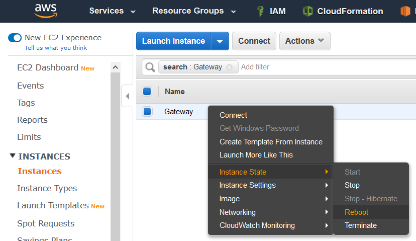

Note
While AWS Portal can enable cloud rendering in Deadline 10, AWS Deadline Cloud is a newer offering that has been built specifically for the cloud. It is a fully managed service that does not require installation or maintenance of infrastructure (e.g., repository, database, or license server). Worker fleet auto-scaling, asset synching, and licensing are all managed natively within AWS by Deadline Cloud. See here for more information on Deadline Cloud and its capabilities.
AWS Portal Link Log Error Messages¶
Connection refused¶
Cause¶
This typically happens when trying to connect to a machine that is not running SSHD. We were able to reach the remote host, but it is not listening on port 22. It is possible that SSHD on the Gateway is either overloaded and is not accepting connections, or SSHD has crashed.
Solution¶
Reboot the Gateway instance via your EC2 Console.
Connection timed out¶
Cause¶
You will generally see this when SSH cannot contact the remote machine.
Host key verification¶
Cause and possible solution¶
Either your Gateway has changed physical instances or your network traffic is being redirected.
The most likely cause is that you previously deployed an AWS Portal infrastructure and your current one is reusing the same public IP address for the Gateway instance as the previous. Or you rebooted your Gateway instance and it acquired the IP address of a previous Gateway. If either of these are the case, then the error is benign; please delete your host identification keyfiles (see below).
Another possibility is that your network traffic is being redirected; you may be the victim of a Man-in-the-middle attack. If you suspect something malicious is going on, contact your network provider.
The host identification keyfiles AWSPortalLink uses are stored in the following location depending on your Operating System.:
Windows: %LOCALAPPDATA%\Thinkbox\AWSPortalLink\<ipaddress>.keys
Linux: $HOME/.Thinkbox/AWSPortalLink\<ipaddress>.keys
Deleting the keys in this location will remove the error. However, if your network was being redirected, the malicious attacker will now be able to eavesdrop on the network traffic to/from your AWSPortal infrastructure.
Solution¶
To fix this, you need to delete all of the host identification keyfiles that AWSPortalLink has accumulated.
Permission denied¶
Cause¶
This is usually because your SSH private key does not authenticate with the host, you have a new public/private key-pair, or the permissions for your key are incorrect.
Solution¶
You will either need to fix the permissions to your key, or recreate your infrastructure.
To fix the permissions of your key, you will need to run these commands as an elevated user. For linux, you can simply start the command with sudo. For windows, open the Command Prompt as an administrator.
Linux:
sudo chmod 600 /opt/Thinkbox/AWSPortalLink/DashKey
Windows:
icacls "%PROGRAMFILES(X86)%"\Thinkbox\AWSPortalLink\DashKey /inheritance:r
icacls "%PROGRAMFILES(X86)%"\Thinkbox\AWSPortalLink\DashKey /grant:r "%username%":"(R)"
Remote port forwarding failed¶
Cause¶
The remote port for a remote tunnel (on the remote machine) is already in use. A zombie SSH tunnel or an application on the Gateway could be using that port. This can happen when the AWSPortalLinkService terminates ungracefully.
Solution¶
Terminate all SSH processes to the Gateway instance. The easiest way to do this is by restarting the computer running AWS Portal Link.
If you are technically savvy, you can also find the processes yourself and terminate them.
Linux:
ps aux | grep ssh
# The commands you need to terminate look like
> /usr/bin/ssh -R 8889:172.31.28.31:8080 -N -v -i /opt/Thinkbox/AWSPortalLink/DashKey ...
> /usr/bin/ssh -L 4001:127.0.0.1:4001 -N -v -i /opt/Thinkbox/AWSPortalLink/DashKey ...
kill -i ${PID}
Windows:
tasklist | findstr ssh
# Make sure you do not terminate the SSH processes spawned
# by other applications
kill -i ${PID}
It might also be necessary to reboot the Gateway instance via your EC2 Console.
Unknown error¶
Cause¶
This has been seen when your PortalLink machine is not actually connected to the internet.
Solution¶
Check that your computer has internet connectivity. Verify PortalLink is able to connect to the internet. Your firewall maybe blocking PortalLink.
You can see how to configure your firewall exceptions here.

{kind=link}
{kind=link}